library(readxl)
library(tidyverse)
library(lme4)
library(lmerTest)
library(showtext)
library(viridis)
library(chisq.posthoc.test)
showtext_auto()04 SEAS Study 2 Exploratory Analyses
Packages
Data Preparation
magma_colors <- c("#000004FF", "#180F3EFF", "#451077FF", "#721F81FF", "#9F2F7FFF", "#CD4071FF", "#F1605DFF", "#FD9567FF", "#FEC98DFF", "#FCFDBFFF") #from magma(10)seas2_full <- read_excel("../Data/FINAL SEAS V2 Dataset.xlsx")
seas2 <- subset(seas2_full, final_data == "Y") # dropping excluded participantsseas2 <- seas2 |>
mutate(
DOB = make_date(birth_year, birth_month, birth_day), #creating date of birth and date of test columns
DOT = as_date(DOT),
.before = DOT
) |>
mutate(
age_months = interval(DOB, DOT) %/% months(1), .after = DOT #calculating age in months
)#Combining any explanation code for a particular response
seas2_united <- seas2 |>
unite("status_explain_1", status_storyref_1:status_relation_1, sep = " ", na.rm = TRUE) |>
unite("resource_explain_1", resource_storyref_1:resource_relation_1, sep = " ", na.rm = TRUE) |>
unite("status_explain_2", status_storyref_2:status_relation_2, sep = " ", na.rm = TRUE) |>
unite("resource_explain_2", resource_storyref_2:resource_relation_2, sep = " ", na.rm = TRUE) |>
unite("status_explain_comp1", comp_status_storyref_1:comp_status_relation_1, sep = " ", na.rm = TRUE) |>
unite("resource_explain_comp1", comp_resource_storyref_1:comp_resource_relation_1, sep = " ", na.rm = TRUE) |>
unite("status_explain_3", status_storyref_3:status_relation_3, sep = " ", na.rm = TRUE) |>
unite("resource_explain_3", resource_storyref_3:resource_relation_3, sep = " ", na.rm = TRUE) |>
unite("status_explain_4", status_storyref_4:status_relation_4, sep = " ", na.rm = TRUE) |>
unite("resource_explain_4", resource_storyref_4:resource_relation_4, sep = " ", na.rm = TRUE) |>
unite("status_explain_comp2", comp_status_storyref_2:comp_status_relation_2, sep = " ", na.rm = TRUE) |>
unite("resource_explain_comp2", comp_resource_storyref_2:comp_resource_relation_2, sep = " ", na.rm = TRUE)#Creating a general explanation mapping function
individual_explain_func <- function(status_or_resource, trial_num) {
possible_explain <- c("ST", "VG", "SG", "EX", "IN", "NR", "MR", "AR", "EP", "EN", "PR", "EM", "MT", "FR", "PS", "OR")
column_of_interest <- paste0(status_or_resource, "_explain_", trial_num)
list_of_dfs <- purrr::map(possible_explain, function(explain) {
seas2_united |>
mutate(!!paste0(status_or_resource, "_", explain, "_", trial_num) := if_else(str_detect(.data[[column_of_interest]], explain), 1, 0))
})
selected_cols <- map(list_of_dfs, ~select(., subject, last_col()))
reduce(selected_cols, left_join, by = "subject")
}#Gathering individual explanation columns for each response
seas2_status_1 <- individual_explain_func("status", 1)
seas2_resource_1 <- individual_explain_func("resource", 1)
seas2_status_2 <- individual_explain_func("status", 2)
seas2_resource_2 <- individual_explain_func("resource", 2)
seas2_status_comp1 <- individual_explain_func("status", "comp1")
seas2_resource_comp1 <- individual_explain_func("resource", "comp1")
seas2_status_3 <- individual_explain_func("status", 3)
seas2_resource_3 <- individual_explain_func("resource", 3)
seas2_status_4 <- individual_explain_func("status", 4)
seas2_resource_4 <- individual_explain_func("resource", 4)
seas2_status_comp2 <- individual_explain_func("status", "comp2")
seas2_resource_comp2 <- individual_explain_func("resource", "comp2")
#Combining back into one dataframe
seas2_separated <- seas2_united |>
left_join(seas2_status_1, by = "subject") |>
left_join(seas2_resource_1, by = "subject") |>
left_join(seas2_status_2, by = "subject") |>
left_join(seas2_resource_2, by = "subject") |>
left_join(seas2_status_comp1, by = "subject") |>
left_join(seas2_resource_comp1, by = "subject") |>
left_join(seas2_status_3, by = "subject") |>
left_join(seas2_resource_3, by = "subject") |>
left_join(seas2_status_4, by = "subject") |>
left_join(seas2_resource_4, by = "subject") |>
left_join(seas2_status_comp2, by = "subject") |>
left_join(seas2_resource_comp2, by = "subject")#Creating sum scores for each type of explanation
seas2_separated <- seas2_separated |>
rowwise() |>
mutate(
ST_total = sum(c_across(matches(".*_ST_."))),
VG_total = sum(c_across(matches(".*_VG_."))),
SG_total = sum(c_across(matches(".*_SG_."))),
EX_total = sum(c_across(matches(".*_EX_."))),
IN_total = sum(c_across(matches(".*_IN_."))),
NR_total = sum(c_across(matches(".*_NR_."))),
MR_total = sum(c_across(matches(".*_MR_."))),
AR_total = sum(c_across(matches(".*_AR_."))),
EP_total = sum(c_across(matches(".*_EP_."))),
EN_total = sum(c_across(matches(".*_EN_."))),
PR_total = sum(c_across(matches(".*_PR_."))),
EM_total = sum(c_across(matches(".*_EM_."))),
MT_total = sum(c_across(matches(".*_MT_."))),
FR_total = sum(c_across(matches(".*_FR_."))),
PS_total = sum(c_across(matches(".*_PS_."))),
OR_total = sum(c_across(matches(".*_OR_."))),
) |>
ungroup() #Pivoting explanation type
seas2_pivoted <- seas2_separated |>
pivot_longer(ST_total:OR_total, names_to = "explanation_type", names_pattern = "(..)_total", values_to = "total")#some exploration of frequency of each type of explanation
seas2_pivoted |>
group_by(explanation_type) |>
summarize(
max = max(total),
min = min(total),
mean = mean(total)
)# A tibble: 16 × 4
explanation_type max min mean
<chr> <dbl> <dbl> <dbl>
1 AR 6 0 0.520
2 EM 11 0 0.347
3 EN 1 0 0.0102
4 EP 6 0 0.296
5 EX 2 0 0.306
6 FR 6 0 0.827
7 IN 4 0 0.194
8 MR 0 0 0
9 MT 4 0 0.194
10 NR 6 0 0.265
11 OR 4 0 0.133
12 PR 12 0 0.459
13 PS 5 0 1.19
14 SG 12 0 3.10
15 ST 8 0 1.5
16 VG 7 0 0.980 Basic Answer Categorization
Graphs
seas2 |>
pivot_longer(
cols = contains("response"),
names_to = "trial",
values_to = "response"
) |>
ggplot(aes(x = as.factor(age), fill = fct_rev(response))) +
geom_bar(position = "fill") +
scale_fill_manual(
values = c(magma_colors[7], magma_colors[5], magma_colors[3]),
labels = c("Relevant Answer", "No or Irrelevant Answer", "Missing")
) +
labs(
title = "Study 2 Explanations Given by Age",
x = "Age (Years)",
y = "Proportion",
fill = NULL
) +
theme_minimal() +
theme(
plot.title = element_text(hjust = 0.5, size = 30),
legend.title = element_text(size = 20),
legend.text = element_text(size = 15),
legend.position = "top",
text = element_text(family = "serif", size = 25)
)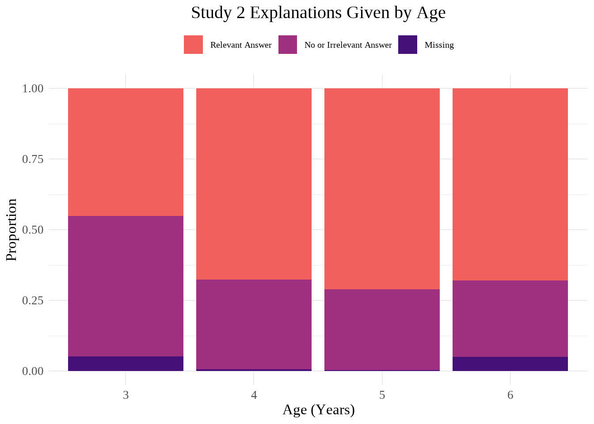
Analyses
seas2_response <- seas2 |>
pivot_longer(
cols = contains("response"),
names_to = "trial",
values_to = "response"
)
seas2_response_table <- xtabs(~response + age, data = seas2_response)
seas2_response_chi <- chisq.test(seas2_response_table)
seas2_response_chi
Pearson's Chi-squared test
data: seas2_response_table
X-squared = 69.977, df = 6, p-value = 4.133e-13seas2_response_posthoc <- chisq.posthoc.test(seas2_response_table, method = "bonferroni")
seas2_response_posthoc Dimension Value 3 4 5 6
1 MS Residuals 2.840742 -2.497171 -3.004876 2.665949
2 MS p values 0.054010 0.150226 0.031883 0.092126
3 NA Residuals 6.408017 -1.030538 -2.299610 -3.005188
4 NA p values 0.000000 1.000000 0.257644 0.031850
5 RA Residuals -7.267281 1.867009 3.287468 2.039814
6 RA p values 0.000000 0.742804 0.012131 0.496426seas2_response_posthoc <- seas2_response_posthoc |>
rename(
three = `3`,
four = `4`,
five = `5`,
six = `6`
)A chi-square square test of independence found that there was a difference across age groups for the overall type of response participants gave to explanation questions (no or irrelevant answer, relevant answer, or missing data). Chi-squared = 69.98, df = 6, p = 4.1^{-13}.
A post-hoc test with Bonferroni correction found one significant difference in whether the response data was missing across age (p3 = 0.05401, p4 = 0.150226, p5 = 0.032, p6 = 0.092126), with 5-year-olds having fewer missing responses than would be expected (adjusted residual = -3), likely due to the fact that there are no missing responses among this age group.
Additionally, there were significant differences in no/irrelevant responses and relevant responses. For no/irrelevant responses, ages 3 and 6 were significant while 4 and 5 were not (p3 = 0, p4 = 1, p5 = 0.26, p6 = 0.03185). The standardized residuals demonstrate that this difference stems from 3-year olds having a greater number of no/irrelevant responses and 6-year olds having fewer than would be expected. (residual3 = 6.41, residual6 = -3.01). A slightly different pattern is found for relevant answers, with 3- and 5-year-old being the only significant groups, such that 5-year-olds have a greater number and 3-year-olds fewer (p3 = 0, residual3 = -7.27; p5 = 0.012131, residual5 = 3.29).
Number of Times a Ppt Used Explanation Across Each Response (0-8)
Initial Graphs
#column chart to see the total number of each type of explanation category participants used across their 8 explanation questions (explain better; can use multiple types of explanation in one response, but using that explanation in response will only be counted once for each question--i.e. maximum for each category is 8)
seas2_pivoted |>
ggplot(aes(x = as.factor(age), y = total, fill = explanation_type)) +
geom_col()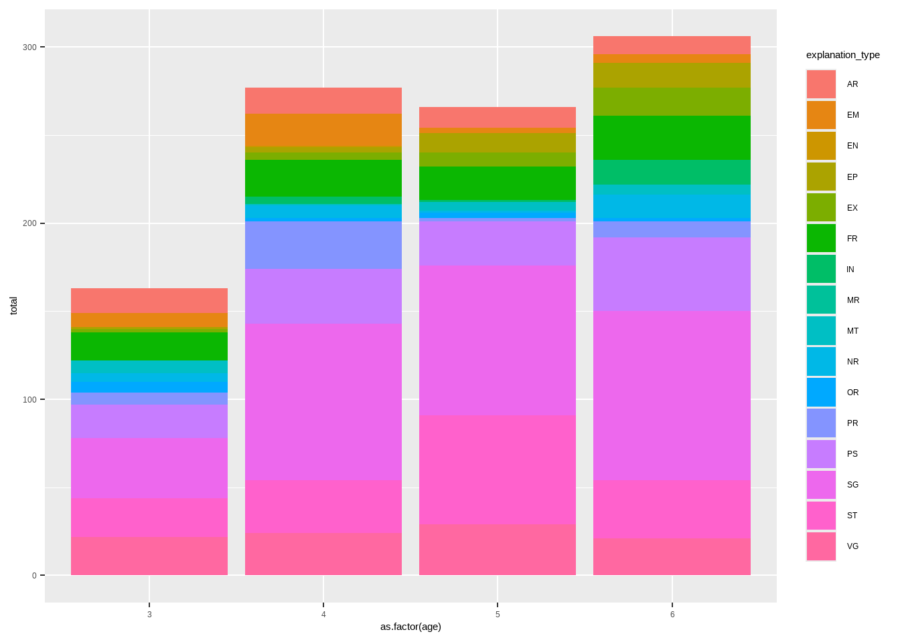
#Scatterplot of explanation types across age
wo_black <- viridis::magma(20)[5:20]
seas2_pivoted |>
mutate(
explanation_type = fct_relevel(explanation_type, "ST", "VG", "SG", "EX", "IN", "NR", "MR", "AR", "EP", "EN", "PR", "EM", "MT", "FR", "PS", "OR")) |>
ggplot(aes(x = age_months, y = total, color = explanation_type, fill = explanation_type)) +
geom_jitter() +
geom_smooth(method = "lm", alpha = 0.2) +
scale_fill_manual(values = wo_black) +
scale_color_manual(values = wo_black) +
labs(
title = "Types of Explanations in All Participants' Responses", #better title/explain better
x = "Age (Months)",
y = "Responses to Explanation Questions",
color = "Explanations",
fill = "Explanations"
) +
theme_minimal() +
theme(
plot.title = element_text(hjust = 0.5, size = 30),
legend.title = element_text(size = 20),
legend.text = element_text(size = 15),
text = element_text(family = "serif", size = 25)
)`geom_smooth()` using formula = 'y ~ x'Warning: Removed 32 rows containing non-finite outside the scale range
(`stat_smooth()`).Warning: Removed 32 rows containing missing values or values outside the scale range
(`geom_point()`).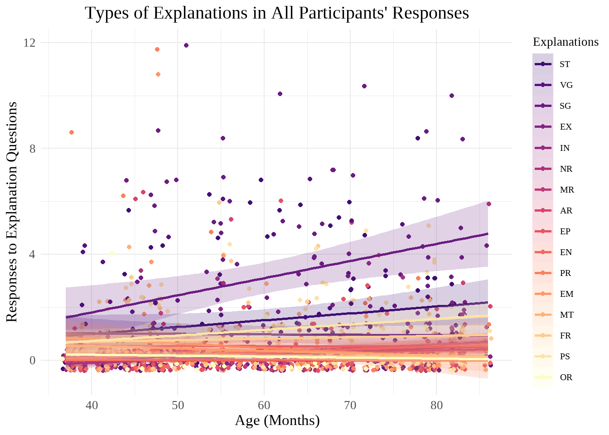
seas2_pivoted |>
mutate(
explanation_type = fct_relevel(explanation_type, "ST", "VG", "SG", "EX", "IN", "NR", "MR", "AR", "EP", "EN", "PR", "EM", "MT", "FR", "PS", "OR")) |>
ggplot(aes(x = age_months, y = total, color = explanation_type, fill = explanation_type)) +
geom_jitter() +
geom_smooth(method = "lm", alpha = 0.2) +
facet_wrap(~explanation_type) +
scale_fill_manual(values = wo_black) +
scale_color_manual(values = wo_black) +
labs(
title = "Types of Explanations in All Participants' Responses", #better title/explain better
x = "Age (Months)",
y = "Responses to Explanation Questions",
color = "Explanations",
fill = "Explanations"
) +
theme_minimal() +
theme(
plot.title = element_text(hjust = 0.5, size = 30),
legend.title = element_text(size = 20),
legend.text = element_text(size = 15),
text = element_text(family = "serif", size = 25)
)`geom_smooth()` using formula = 'y ~ x'Warning: Removed 32 rows containing non-finite outside the scale range
(`stat_smooth()`).Warning: Removed 32 rows containing missing values or values outside the scale range
(`geom_point()`).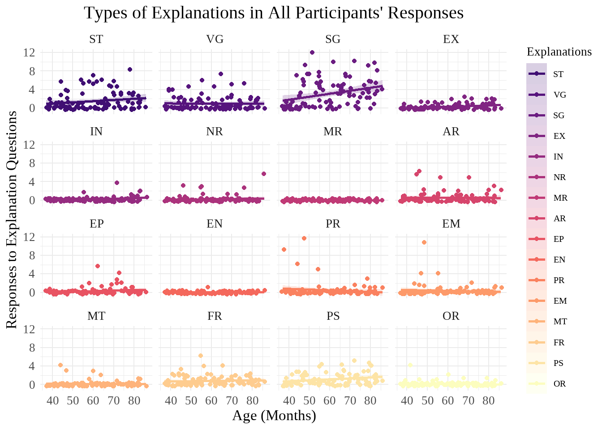
Analyses
Overall
#Does the frequency of each answer type change with age?
summary(lmer(
total ~ age_months * explanation_type + (1 | subject),
data = seas2_pivoted
)) #lmer correct? I thought it would be glmer with a poisson family but that produced errorsLinear mixed model fit by REML. t-tests use Satterthwaite's method [
lmerModLmerTest]
Formula: total ~ age_months * explanation_type + (1 | subject)
Data: seas2_pivoted
REML criterion at convergence: 5269.8
Scaled residuals:
Min 1Q Median 3Q Max
-3.2271 -0.3797 -0.1432 0.0764 8.6595
Random effects:
Groups Name Variance Std.Dev.
subject (Intercept) 0.05559 0.2358
Residual 1.62482 1.2747
Number of obs: 1536, groups: subject, 96
Fixed effects:
Estimate Std. Error df t value Pr(>|t|)
(Intercept) 5.871e-01 5.819e-01 1.480e+03 1.009 0.3132
age_months -9.303e-04 9.443e-03 1.480e+03 -0.099 0.9215
explanation_typeEM 3.032e-01 8.092e-01 1.410e+03 0.375 0.7080
explanation_typeEN -5.703e-01 8.092e-01 1.410e+03 -0.705 0.4811
explanation_typeEP -9.400e-01 8.092e-01 1.410e+03 -1.162 0.2456
explanation_typeEX -1.157e+00 8.092e-01 1.410e+03 -1.429 0.1532
explanation_typeFR -1.032e-01 8.092e-01 1.410e+03 -0.127 0.8986
explanation_typeIN -1.243e+00 8.092e-01 1.410e+03 -1.536 0.1248
explanation_typeMR -5.871e-01 8.092e-01 1.410e+03 -0.725 0.4683
explanation_typeMT -2.925e-01 8.092e-01 1.410e+03 -0.361 0.7178
explanation_typeNR -7.257e-01 8.092e-01 1.410e+03 -0.897 0.3700
explanation_typeOR -2.315e-01 8.092e-01 1.410e+03 -0.286 0.7749
explanation_typePR 8.767e-01 8.092e-01 1.410e+03 1.083 0.2788
explanation_typePS -6.954e-01 8.092e-01 1.410e+03 -0.859 0.3903
explanation_typeSG -1.364e+00 8.092e-01 1.410e+03 -1.686 0.0920
explanation_typeST -6.322e-01 8.092e-01 1.410e+03 -0.781 0.4348
explanation_typeVG 4.907e-01 8.092e-01 1.410e+03 0.606 0.5443
age_months:explanation_typeEM -8.003e-03 1.313e-02 1.410e+03 -0.609 0.5423
age_months:explanation_typeEN 8.236e-04 1.313e-02 1.410e+03 0.063 0.9500
age_months:explanation_typeEP 1.185e-02 1.313e-02 1.410e+03 0.902 0.3672
age_months:explanation_typeEX 1.545e-02 1.313e-02 1.410e+03 1.177 0.2395
age_months:explanation_typeFR 6.406e-03 1.313e-02 1.410e+03 0.488 0.6258
age_months:explanation_typeIN 1.498e-02 1.313e-02 1.410e+03 1.141 0.2541
age_months:explanation_typeMR 9.303e-04 1.313e-02 1.410e+03 0.071 0.9435
age_months:explanation_typeMT -1.201e-03 1.313e-02 1.410e+03 -0.091 0.9271
age_months:explanation_typeNR 7.232e-03 1.313e-02 1.410e+03 0.551 0.5819
age_months:explanation_typeOR -2.738e-03 1.313e-02 1.410e+03 -0.209 0.8348
age_months:explanation_typePR -1.565e-02 1.313e-02 1.410e+03 -1.192 0.2335
age_months:explanation_typePS 2.183e-02 1.313e-02 1.410e+03 1.662 0.0967
age_months:explanation_typeSG 6.561e-02 1.313e-02 1.410e+03 4.996 6.57e-07
age_months:explanation_typeST 2.685e-02 1.313e-02 1.410e+03 2.045 0.0411
age_months:explanation_typeVG -7.136e-04 1.313e-02 1.410e+03 -0.054 0.9567
(Intercept)
age_months
explanation_typeEM
explanation_typeEN
explanation_typeEP
explanation_typeEX
explanation_typeFR
explanation_typeIN
explanation_typeMR
explanation_typeMT
explanation_typeNR
explanation_typeOR
explanation_typePR
explanation_typePS
explanation_typeSG .
explanation_typeST
explanation_typeVG
age_months:explanation_typeEM
age_months:explanation_typeEN
age_months:explanation_typeEP
age_months:explanation_typeEX
age_months:explanation_typeFR
age_months:explanation_typeIN
age_months:explanation_typeMR
age_months:explanation_typeMT
age_months:explanation_typeNR
age_months:explanation_typeOR
age_months:explanation_typePR
age_months:explanation_typePS .
age_months:explanation_typeSG ***
age_months:explanation_typeST *
age_months:explanation_typeVG
---
Signif. codes: 0 '***' 0.001 '**' 0.01 '*' 0.05 '.' 0.1 ' ' 1
Correlation matrix not shown by default, as p = 32 > 12.
Use print(x, correlation=TRUE) or
vcov(x) if you need itIn this model, SG x age and ST x age are significant, demonstrating that the frequencies of explanation responses (0-12 across trial) changes with these conditions.
Exclusion
#Does the frequency of explanations that reference exclusion change with age?
summary(glm(
EX_total ~ age_months,
data = seas2_separated
))
Call:
glm(formula = EX_total ~ age_months, data = seas2_separated)
Coefficients:
Estimate Std. Error t value Pr(>|t|)
(Intercept) -0.569487 0.246156 -2.314 0.022874 *
age_months 0.014524 0.003994 3.636 0.000452 ***
---
Signif. codes: 0 '***' 0.001 '**' 0.01 '*' 0.05 '.' 0.1 ' ' 1
(Dispersion parameter for gaussian family taken to be 0.3006861)
Null deviance: 32.240 on 95 degrees of freedom
Residual deviance: 28.264 on 94 degrees of freedom
(2 observations deleted due to missingness)
AIC: 161.05
Number of Fisher Scoring iterations: 2The number of explanations that reference exclusion given by participants does significantly differ by age.
#does whether a response references exclusion depend on the question type (status or resources), age, or the interaction thereof?
seas2_EX_qtype <- seas2_separated |>
select(subject, age_months, matches(".*_EX_.")) |>
pivot_longer(
cols = -(subject:age_months),
names_to = "question_type",
names_pattern = "(.*)_EX_.",
values_to = "EX"
)
summary(glm(
EX ~ question_type * age_months,
data = seas2_EX_qtype
))
Call:
glm(formula = EX ~ question_type * age_months, data = seas2_EX_qtype)
Coefficients:
Estimate Std. Error t value Pr(>|t|)
(Intercept) -0.0832073 0.0285462 -2.915 0.00363 **
question_typestatus 0.0715001 0.0403704 1.771 0.07681 .
age_months 0.0018205 0.0004632 3.930 9e-05 ***
question_typestatus:age_months -0.0012204 0.0006551 -1.863 0.06273 .
---
Signif. codes: 0 '***' 0.001 '**' 0.01 '*' 0.05 '.' 0.1 ' ' 1
(Dispersion parameter for gaussian family taken to be 0.02426275)
Null deviance: 28.270 on 1151 degrees of freedom
Residual deviance: 27.854 on 1148 degrees of freedom
(24 observations deleted due to missingness)
AIC: -1008.8
Number of Fisher Scoring iterations: 2According to this model, the number of explanations that reference exclusion differs based on age, but not based on the type of question (status vs resources) or an interaction between the two.
Inclusion
#Does the frequency of explanations that reference exclusion change with age?
summary(glm(
IN_total ~ age_months,
data = seas2_separated
))
Call:
glm(formula = IN_total ~ age_months, data = seas2_separated)
Coefficients:
Estimate Std. Error t value Pr(>|t|)
(Intercept) -0.655775 0.248924 -2.634 0.009856 **
age_months 0.014052 0.004039 3.479 0.000765 ***
---
Signif. codes: 0 '***' 0.001 '**' 0.01 '*' 0.05 '.' 0.1 ' ' 1
(Dispersion parameter for gaussian family taken to be 0.3074874)
Null deviance: 32.625 on 95 degrees of freedom
Residual deviance: 28.904 on 94 degrees of freedom
(2 observations deleted due to missingness)
AIC: 163.2
Number of Fisher Scoring iterations: 2The number of explanations that reference inclusion given by participants does significantly differ by age.
#does whether a response references inclusion depend on the question type (status or resources), age, or the interaction thereof?
seas2_IN_qtype <- seas2_separated |>
select(subject, age_months, matches(".*_IN_.")) |>
pivot_longer(
cols = -(subject:age_months),
names_to = "question_type",
names_pattern = "(.*)_IN_.",
values_to = "IN"
)
summary(glm(
IN ~ question_type * age_months,
data = seas2_IN_qtype
))
Call:
glm(formula = IN ~ question_type * age_months, data = seas2_IN_qtype)
Coefficients:
Estimate Std. Error t value Pr(>|t|)
(Intercept) -0.0712992 0.0225091 -3.168 0.00158 **
question_typestatus 0.0333025 0.0318327 1.046 0.29570
age_months 0.0015642 0.0003653 4.282 2e-05 ***
question_typestatus:age_months -0.0007864 0.0005166 -1.522 0.12820
---
Signif. codes: 0 '***' 0.001 '**' 0.01 '*' 0.05 '.' 0.1 ' ' 1
(Dispersion parameter for gaussian family taken to be 0.01508548)
Null deviance: 17.719 on 1151 degrees of freedom
Residual deviance: 17.318 on 1148 degrees of freedom
(24 observations deleted due to missingness)
AIC: -1556.3
Number of Fisher Scoring iterations: 2According to this model, the number of explanations that reference inclusion differs based on age, but not based on the type of question (status vs resources) or an interaction between the two.
Specific Game
#Does the frequency of explanations that reference the game specifically change with age?
summary(glm(
SG_total ~ age_months,
data = seas2_separated
))
Call:
glm(formula = SG_total ~ age_months, data = seas2_separated)
Coefficients:
Estimate Std. Error t value Pr(>|t|)
(Intercept) -0.77731 1.30312 -0.597 0.5523
age_months 0.06468 0.02115 3.059 0.0029 **
---
Signif. codes: 0 '***' 0.001 '**' 0.01 '*' 0.05 '.' 0.1 ' ' 1
(Dispersion parameter for gaussian family taken to be 8.426809)
Null deviance: 870.96 on 95 degrees of freedom
Residual deviance: 792.12 on 94 degrees of freedom
(2 observations deleted due to missingness)
AIC: 481.03
Number of Fisher Scoring iterations: 2The number of explanations that reference the game with specific details given by participants does significantly differ by age.
#does whether a response references the game specifically depend on the question type (status or resources), age, or the interaction thereof?
seas2_SG_qtype <- seas2_separated |>
select(subject, age_months, matches(".*_SG_.")) |>
pivot_longer(
cols = -(subject:age_months),
names_to = "question_type",
names_pattern = "(.*)_SG_.",
values_to = "SG"
)
summary(glm(
SG ~ question_type * age_months,
data = seas2_SG_qtype
))
Call:
glm(formula = SG ~ question_type * age_months, data = seas2_SG_qtype)
Coefficients:
Estimate Std. Error t value Pr(>|t|)
(Intercept) -0.145165 0.079029 -1.837 0.0665 .
question_typestatus 0.160777 0.111765 1.439 0.1506
age_months 0.006990 0.001282 5.451 6.14e-08 ***
question_typestatus:age_months -0.003200 0.001814 -1.764 0.0779 .
---
Signif. codes: 0 '***' 0.001 '**' 0.01 '*' 0.05 '.' 0.1 ' ' 1
(Dispersion parameter for gaussian family taken to be 0.185961)
Null deviance: 220.91 on 1151 degrees of freedom
Residual deviance: 213.48 on 1148 degrees of freedom
(24 observations deleted due to missingness)
AIC: 1337.3
Number of Fisher Scoring iterations: 2Whether an answer references the game specifically is significantly associated with age but not question type nor an interaction between age and question type.
Superficial Traits
#Does the frequency of explanations that reference the game specifically change with age?
summary(glm(
ST_total ~ age_months,
data = seas2_separated
))
Call:
glm(formula = ST_total ~ age_months, data = seas2_separated)
Coefficients:
Estimate Std. Error t value Pr(>|t|)
(Intercept) -0.04514 0.91358 -0.049 0.9607
age_months 0.02592 0.01483 1.748 0.0836 .
---
Signif. codes: 0 '***' 0.001 '**' 0.01 '*' 0.05 '.' 0.1 ' ' 1
(Dispersion parameter for gaussian family taken to be 4.141779)
Null deviance: 401.99 on 95 degrees of freedom
Residual deviance: 389.33 on 94 degrees of freedom
(2 observations deleted due to missingness)
AIC: 412.84
Number of Fisher Scoring iterations: 2The number of explanations that reference superficial traits about a character given by participants does not significantly differ by age.
#does whether a response references the game specifically depend on the question type (status or resources), age, or the interaction thereof?
seas2_ST_qtype <- seas2_separated |>
select(subject, age_months, matches(".*_ST_.")) |>
pivot_longer(
cols = -(subject:age_months),
names_to = "question_type",
names_pattern = "(.*)_ST_.",
values_to = "ST"
)
summary(glm(
ST ~ question_type * age_months,
data = seas2_ST_qtype
))
Call:
glm(formula = ST ~ question_type * age_months, data = seas2_ST_qtype)
Coefficients:
Estimate Std. Error t value Pr(>|t|)
(Intercept) 0.0025814 0.0606116 0.043 0.9660
question_typestatus -0.0126862 0.0857177 -0.148 0.8824
age_months 0.0018953 0.0009836 1.927 0.0542 .
question_typestatus:age_months 0.0005296 0.0013910 0.381 0.7034
---
Signif. codes: 0 '***' 0.001 '**' 0.01 '*' 0.05 '.' 0.1 ' ' 1
(Dispersion parameter for gaussian family taken to be 0.1093842)
Null deviance: 126.75 on 1151 degrees of freedom
Residual deviance: 125.57 on 1148 degrees of freedom
(24 observations deleted due to missingness)
AIC: 725.98
Number of Fisher Scoring iterations: 2Whether an answer references a character’s superficial traits is not significantly associated with age, question type, or an interaction between the two.
Follow-Up Graphs
EX_count_age_scatter <- seas2_separated |>
ggplot(aes(x = age_months, y = EX_total)) +
geom_jitter() +
stat_smooth(
method = "lm",
formula = y ~ x,
color = magma_colors[3],
fill = magma_colors[5],
alpha = 0.25) +
labs(
title = "Study 2 Explanations Referencing Exclusion by Age",
x = "Age (Months)",
y = "Explanations Referencing Exclusion"
) +
theme_minimal() +
theme(
plot.title = element_text(hjust = 0.5, size = 30),
text = element_text(family = "serif", size = 25)
)
EX_count_age_scatterWarning: Removed 2 rows containing non-finite outside the scale range
(`stat_smooth()`).Warning: Removed 2 rows containing missing values or values outside the scale range
(`geom_point()`).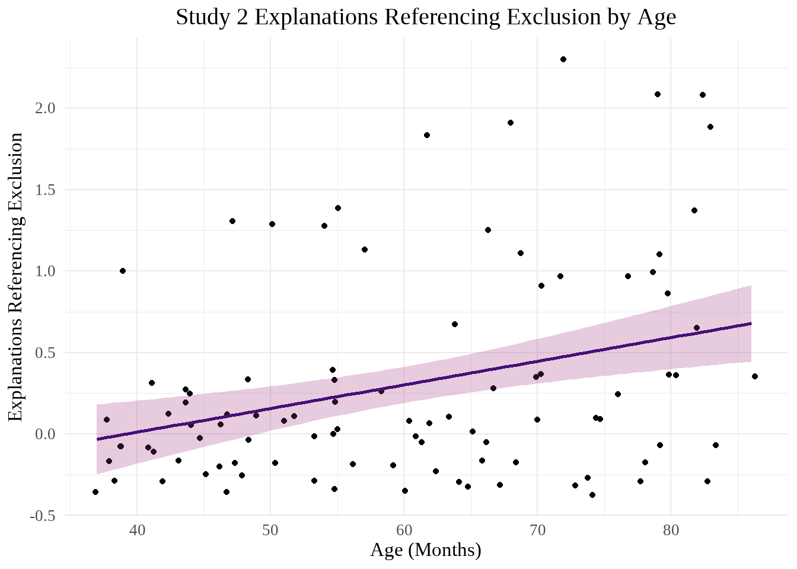
#Also the actual possible range of responses is 0-12, so this graph would look even worse zoomed outSG_count_age_scatter <- seas2_separated |>
ggplot(aes(x = age_months, y = SG_total)) +
geom_jitter() +
stat_smooth(
method = "lm",
formula = y ~ x,
color = magma_colors[3],
fill = magma_colors[5],
alpha = 0.25) +
labs(
title = "Study 2 Explanations Referencing the Game Specifically by Age",
x = "Age (Months)",
y = "Explanations Referencing the Game Specifically"
) +
theme_minimal() +
theme(
plot.title = element_text(hjust = 0.5, size = 30),
text = element_text(family = "serif", size = 25)
)
SG_count_age_scatterWarning: Removed 2 rows containing non-finite outside the scale range
(`stat_smooth()`).Warning: Removed 2 rows containing missing values or values outside the scale range
(`geom_point()`).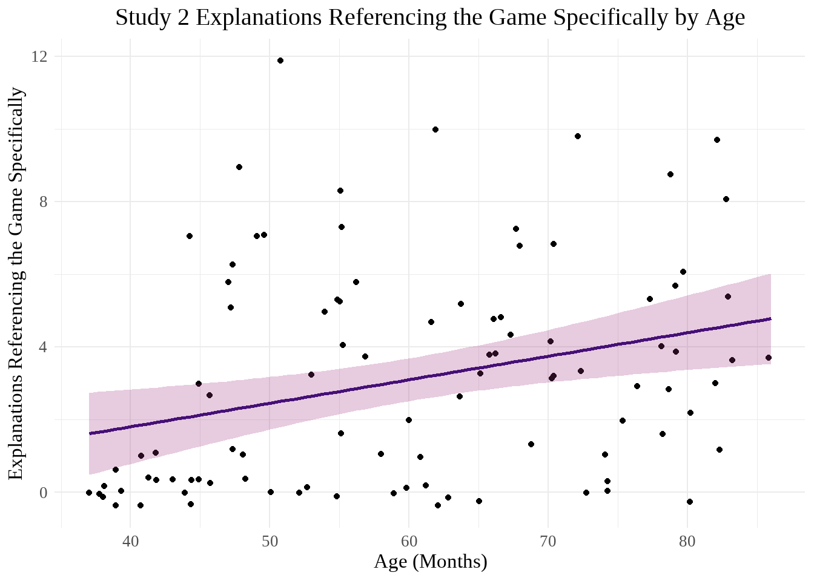
Did a Ppt Use Type of Explanation in Any Response?
Initial Graphs
seas2_pivoted <- seas2_pivoted |>
mutate(
present = if_else(total == 0, 0, 1),
explanation_type = fct_relevel(explanation_type, "ST", "VG", "SG", "EX", "IN", "NR", "MR", "AR", "EP", "EN", "PR", "EM", "MT", "FR", "PS", "OR")
)
seas2_pivoted|>
ggplot(aes(x = age_months, y = present, color = explanation_type, fill = explanation_type)) +
geom_point(position = position_jitter(height = .15)) +
geom_smooth(method = "lm", alpha = 0.2) +
scale_fill_manual(values = wo_black) +
scale_color_manual(values = wo_black) +
labs(
title = "Types of Explanations Present in Participants' Responses", #better title/explain better
x = "Age (Months)",
y = "Responses Present Across Explanation Questions",
color = "Explanations",
fill = "Explanations"
) +
theme_minimal() +
theme(
plot.title = element_text(hjust = 0.5, size = 30),
legend.title = element_text(size = 20),
legend.text = element_text(size = 15),
text = element_text(family = "serif", size = 25)
) +
scale_y_continuous(breaks = c(0, 1), labels = (c("Absent", "Present")))`geom_smooth()` using formula = 'y ~ x'Warning: Removed 32 rows containing non-finite outside the scale range
(`stat_smooth()`).Warning: Removed 32 rows containing missing values or values outside the scale range
(`geom_point()`).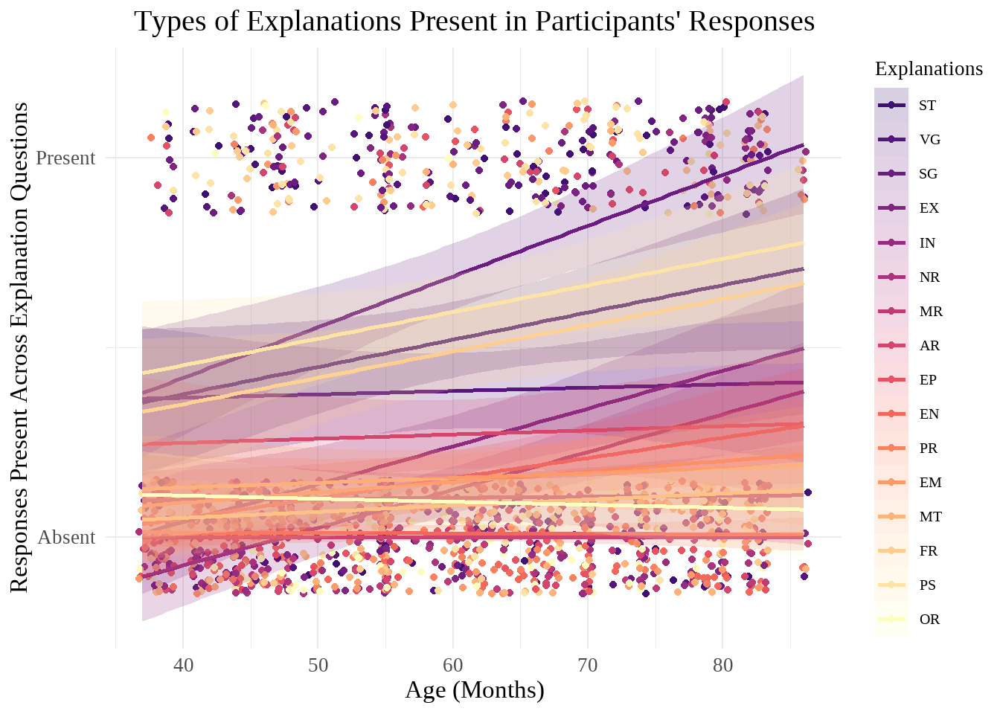
seas2_pivoted |>
ggplot(aes(x = age_months, y = present, color = explanation_type, fill = explanation_type)) +
geom_point(position = position_jitter(height = .15)) +
geom_smooth(method = "lm", alpha = 0.2) +
scale_fill_manual(values = wo_black) +
scale_color_manual(values = wo_black) +
facet_wrap(~explanation_type) +
labs(
title = "Study 2 Types of Explanations Present in Participants' Responses", #better title/explain better
x = "Age (Months)",
y = "Responses Present Across Explanation Questions",
color = "Explanations",
fill = "Explanations"
) +
theme_minimal() +
theme(
plot.title = element_text(hjust = 0.5, size = 30),
legend.title = element_text(size = 20),
legend.text = element_text(size = 15),
text = element_text(family = "serif", size = 25)
) +
scale_y_continuous(breaks = c(0, 1), labels = (c("Absent", "Present")))`geom_smooth()` using formula = 'y ~ x'Warning: Removed 32 rows containing non-finite outside the scale range
(`stat_smooth()`).Warning: Removed 32 rows containing missing values or values outside the scale range
(`geom_point()`).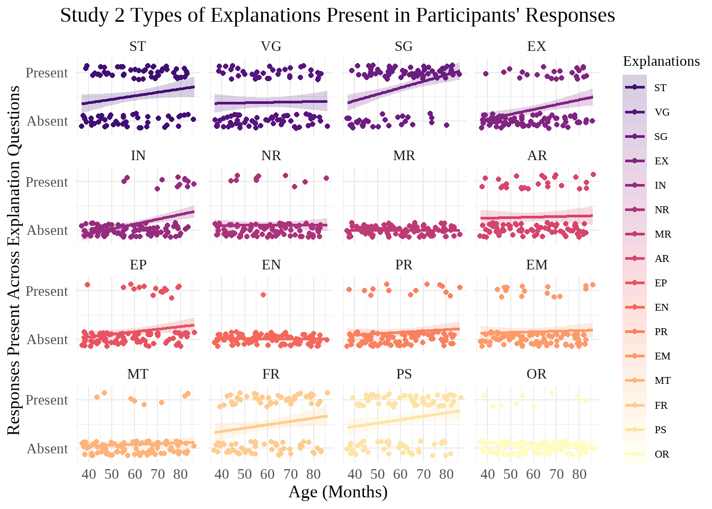
Analyses
Overall
summary(lmer(
present ~ age_months * explanation_type + (1 | subject),
data = seas2_pivoted
)) #Again, I thought this would be a binomial glmer but errors; however lmer output doesn't seem to match graphsLinear mixed model fit by REML. t-tests use Satterthwaite's method [
lmerModLmerTest]
Formula: present ~ age_months * explanation_type + (1 | subject)
Data: seas2_pivoted
REML criterion at convergence: 1513.1
Scaled residuals:
Min 1Q Median 3Q Max
-2.2211 -0.5845 -0.2149 0.3546 2.6016
Random effects:
Groups Name Variance Std.Dev.
subject (Intercept) 0.01216 0.1103
Residual 0.12972 0.3602
Number of obs: 1536, groups: subject, 96
Fixed effects:
Estimate Std. Error df t value Pr(>|t|)
(Intercept) 8.941e-02 1.691e-01 1.355e+03 0.529 0.59705
age_months 7.189e-03 2.744e-03 1.355e+03 2.620 0.00889
explanation_typeVG 2.431e-01 2.287e-01 1.410e+03 1.063 0.28788
explanation_typeSG -2.054e-01 2.287e-01 1.410e+03 -0.898 0.36922
explanation_typeEX -4.477e-01 2.287e-01 1.410e+03 -1.958 0.05041
explanation_typeIN -5.627e-01 2.287e-01 1.410e+03 -2.461 0.01398
explanation_typeNR -8.341e-04 2.287e-01 1.410e+03 -0.004 0.99709
explanation_typeMR -8.941e-02 2.287e-01 1.410e+03 -0.391 0.69583
explanation_typeAR 1.154e-01 2.287e-01 1.410e+03 0.505 0.61381
explanation_typeEP -2.511e-01 2.287e-01 1.410e+03 -1.098 0.27231
explanation_typeEN -7.259e-02 2.287e-01 1.410e+03 -0.317 0.75093
explanation_typePR -1.087e-01 2.287e-01 1.410e+03 -0.475 0.63457
explanation_typeEM -9.089e-03 2.287e-01 1.410e+03 -0.040 0.96830
explanation_typeMT -1.013e-01 2.287e-01 1.410e+03 -0.443 0.65767
explanation_typeFR -1.543e-02 2.287e-01 1.410e+03 -0.067 0.94622
explanation_typePS 8.270e-02 2.287e-01 1.410e+03 0.362 0.71763
explanation_typeOR 5.240e-02 2.287e-01 1.410e+03 0.229 0.81876
age_months:explanation_typeVG -6.307e-03 3.710e-03 1.410e+03 -1.700 0.08936
age_months:explanation_typeSG 6.200e-03 3.710e-03 1.410e+03 1.671 0.09497
age_months:explanation_typeEX 2.774e-03 3.710e-03 1.410e+03 0.748 0.45477
age_months:explanation_typeIN 2.780e-03 3.710e-03 1.410e+03 0.749 0.45378
age_months:explanation_typeNR -6.929e-03 3.710e-03 1.410e+03 -1.868 0.06203
age_months:explanation_typeMR -7.189e-03 3.710e-03 1.410e+03 -1.938 0.05288
age_months:explanation_typeAR -6.089e-03 3.710e-03 1.410e+03 -1.641 0.10100
age_months:explanation_typeEP -1.891e-03 3.710e-03 1.410e+03 -0.510 0.61038
age_months:explanation_typeEN -7.296e-03 3.710e-03 1.410e+03 -1.966 0.04946
age_months:explanation_typePR -4.437e-03 3.710e-03 1.410e+03 -1.196 0.23191
age_months:explanation_typeEM -5.924e-03 3.710e-03 1.410e+03 -1.597 0.11059
age_months:explanation_typeMT -5.602e-03 3.710e-03 1.410e+03 -1.510 0.13134
age_months:explanation_typeFR -2.637e-04 3.710e-03 1.410e+03 -0.071 0.94336
age_months:explanation_typePS -1.631e-04 3.710e-03 1.410e+03 -0.044 0.96495
age_months:explanation_typeOR -7.990e-03 3.710e-03 1.410e+03 -2.153 0.03146
(Intercept)
age_months **
explanation_typeVG
explanation_typeSG
explanation_typeEX .
explanation_typeIN *
explanation_typeNR
explanation_typeMR
explanation_typeAR
explanation_typeEP
explanation_typeEN
explanation_typePR
explanation_typeEM
explanation_typeMT
explanation_typeFR
explanation_typePS
explanation_typeOR
age_months:explanation_typeVG .
age_months:explanation_typeSG .
age_months:explanation_typeEX
age_months:explanation_typeIN
age_months:explanation_typeNR .
age_months:explanation_typeMR .
age_months:explanation_typeAR
age_months:explanation_typeEP
age_months:explanation_typeEN *
age_months:explanation_typePR
age_months:explanation_typeEM
age_months:explanation_typeMT
age_months:explanation_typeFR
age_months:explanation_typePS
age_months:explanation_typeOR *
---
Signif. codes: 0 '***' 0.001 '**' 0.01 '*' 0.05 '.' 0.1 ' ' 1
Correlation matrix not shown by default, as p = 32 > 12.
Use print(x, correlation=TRUE) or
vcov(x) if you need itIn this model, the presence of a type of explanation across a participant’s responses significantly differs based on age, IN, age x EN, and age x OR.
Exclusion
#Does the presence of explanations that reference exclusion change with age?
seas2_separated <- seas2_separated |>
mutate(
across(
.cols = ST_total:OR_total,
.fns = ~if_else(.x > 0, 1, 0),
.names = "{sub('total', 'present', col)}"
)
) #Adding present columns to non-pivoted dataset
summary(glm(
EX_present ~ age_months,
data = seas2_separated
))
Call:
glm(formula = EX_present ~ age_months, data = seas2_separated)
Coefficients:
Estimate Std. Error t value Pr(>|t|)
(Intercept) -0.358325 0.182985 -1.958 0.05317 .
age_months 0.009963 0.002969 3.355 0.00114 **
---
Signif. codes: 0 '***' 0.001 '**' 0.01 '*' 0.05 '.' 0.1 ' ' 1
(Dispersion parameter for gaussian family taken to be 0.166158)
Null deviance: 17.490 on 95 degrees of freedom
Residual deviance: 15.619 on 94 degrees of freedom
(2 observations deleted due to missingness)
AIC: 104.11
Number of Fisher Scoring iterations: 2Whether participants reference exclusion at least once in the study significantly differs with age.
Inclusion
#Does the presence of explanations that reference inclusion change with age?
summary(glm(
IN_present ~ age_months,
data = seas2_separated
))
Call:
glm(formula = IN_present ~ age_months, data = seas2_separated)
Coefficients:
Estimate Std. Error t value Pr(>|t|)
(Intercept) -0.473273 0.135994 -3.480 0.000762 ***
age_months 0.009969 0.002207 4.518 1.82e-05 ***
---
Signif. codes: 0 '***' 0.001 '**' 0.01 '*' 0.05 '.' 0.1 ' ' 1
(Dispersion parameter for gaussian family taken to be 0.0917764)
Null deviance: 10.500 on 95 degrees of freedom
Residual deviance: 8.627 on 94 degrees of freedom
(2 observations deleted due to missingness)
AIC: 47.129
Number of Fisher Scoring iterations: 2Whether participants reference inclusion at least once in the study significantly differs with age.
Negative Evaluations
#Does the presence of explanations that reference negative evaluations change with age?
summary(glm(
EN_present ~ age_months,
data = seas2_separated
))
Call:
glm(formula = EN_present ~ age_months, data = seas2_separated)
Coefficients:
Estimate Std. Error t value Pr(>|t|)
(Intercept) 0.0168187 0.0460542 0.365 0.716
age_months -0.0001067 0.0007473 -0.143 0.887
(Dispersion parameter for gaussian family taken to be 0.0105252)
Null deviance: 0.98958 on 95 degrees of freedom
Residual deviance: 0.98937 on 94 degrees of freedom
(2 observations deleted due to missingness)
AIC: -160.77
Number of Fisher Scoring iterations: 2Whether participants reference negative evaluations at least once in the study does not significantly differ with age.
Other
#Does the presence of explanations that reference something not categorized in our codes change with age?
summary(glm(
OR_present ~ age_months,
data = seas2_separated
))
Call:
glm(formula = OR_present ~ age_months, data = seas2_separated)
Coefficients:
Estimate Std. Error t value Pr(>|t|)
(Intercept) 0.1418149 0.1321336 1.073 0.286
age_months -0.0008009 0.0021442 -0.374 0.710
(Dispersion parameter for gaussian family taken to be 0.08664001)
Null deviance: 8.1562 on 95 degrees of freedom
Residual deviance: 8.1442 on 94 degrees of freedom
(2 observations deleted due to missingness)
AIC: 41.6
Number of Fisher Scoring iterations: 2Whether participants answer with something not contained in our explanation codes at least once in the study does not significantly differ with age.
Superficial Traits
#Does the presence of explanations that reference superficial traits change with age?
summary(glm(
ST_present ~ age_months,
data = seas2_separated
))
Call:
glm(formula = ST_present ~ age_months, data = seas2_separated)
Coefficients:
Estimate Std. Error t value Pr(>|t|)
(Intercept) 0.089410 0.221976 0.403 0.6880
age_months 0.007189 0.003602 1.996 0.0488 *
---
Signif. codes: 0 '***' 0.001 '**' 0.01 '*' 0.05 '.' 0.1 ' ' 1
(Dispersion parameter for gaussian family taken to be 0.2445144)
Null deviance: 23.958 on 95 degrees of freedom
Residual deviance: 22.984 on 94 degrees of freedom
(2 observations deleted due to missingness)
AIC: 141.2
Number of Fisher Scoring iterations: 2Whether participants reference superficial traits at least once in the study significantly differs with age.
Specific Game
#Does the presence of explanations that reference the game specifically change with age?
summary(glm(
SG_present ~ age_months,
data = seas2_separated
))
Call:
glm(formula = SG_present ~ age_months, data = seas2_separated)
Coefficients:
Estimate Std. Error t value Pr(>|t|)
(Intercept) -0.11597 0.19229 -0.603 0.548
age_months 0.01339 0.00312 4.291 4.32e-05 ***
---
Signif. codes: 0 '***' 0.001 '**' 0.01 '*' 0.05 '.' 0.1 ' ' 1
(Dispersion parameter for gaussian family taken to be 0.1834769)
Null deviance: 20.625 on 95 degrees of freedom
Residual deviance: 17.247 on 94 degrees of freedom
(2 observations deleted due to missingness)
AIC: 113.63
Number of Fisher Scoring iterations: 2Whether participants reference the game specifically at least once in the study significantly differs with age.
Friends
#Does the presence of explanations that reference preferences change with age?
summary(glm(
FR_present ~ age_months,
data = seas2_separated
))
Call:
glm(formula = FR_present ~ age_months, data = seas2_separated)
Coefficients:
Estimate Std. Error t value Pr(>|t|)
(Intercept) 0.073983 0.222465 0.333 0.7402
age_months 0.006925 0.003610 1.918 0.0581 .
---
Signif. codes: 0 '***' 0.001 '**' 0.01 '*' 0.05 '.' 0.1 ' ' 1
(Dispersion parameter for gaussian family taken to be 0.245593)
Null deviance: 23.990 on 95 degrees of freedom
Residual deviance: 23.086 on 94 degrees of freedom
(2 observations deleted due to missingness)
AIC: 141.62
Number of Fisher Scoring iterations: 2Whether participants reference friends at least once in the study does not significantly differ with age.
Possessions
#Does the presence of explanations that reference preferences change with age?
summary(glm(
PS_present ~ age_months,
data = seas2_separated
))
Call:
glm(formula = PS_present ~ age_months, data = seas2_separated)
Coefficients:
Estimate Std. Error t value Pr(>|t|)
(Intercept) 0.172113 0.218283 0.788 0.4324
age_months 0.007026 0.003542 1.984 0.0502 .
---
Signif. codes: 0 '***' 0.001 '**' 0.01 '*' 0.05 '.' 0.1 ' ' 1
(Dispersion parameter for gaussian family taken to be 0.2364463)
Null deviance: 23.156 on 95 degrees of freedom
Residual deviance: 22.226 on 94 degrees of freedom
(2 observations deleted due to missingness)
AIC: 137.98
Number of Fisher Scoring iterations: 2Whether participants reference possessions at least once in the study does not significantly differ with age.
Follow-Up Graphs
EX_presence_age_scatter <- seas2_separated |>
ggplot(aes(x = age_months, y = EX_present)) +
geom_jitter() +
stat_smooth(
method = "lm",
formula = y ~ x,
color = magma_colors[3],
fill = magma_colors[5],
alpha = 0.25) +
geom_hline(yintercept = 0.5, linetype = "dashed", linewidth = 1, alpha = 0.5) +
labs(
title = "Study 2 Explanations Referencing Exclusion by Age",
x = "Age (Months)",
y = NULL
) +
theme_minimal() +
theme(
plot.title = element_text(hjust = 0.5, size = 30),
text = element_text(family = "serif", size = 25)
) +
scale_y_continuous(
breaks = c(0,1),
labels = c("Not Referenced", "Exclusion Referenced")
)
EX_presence_age_scatterWarning: Removed 2 rows containing non-finite outside the scale range
(`stat_smooth()`).Warning: Removed 2 rows containing missing values or values outside the scale range
(`geom_point()`).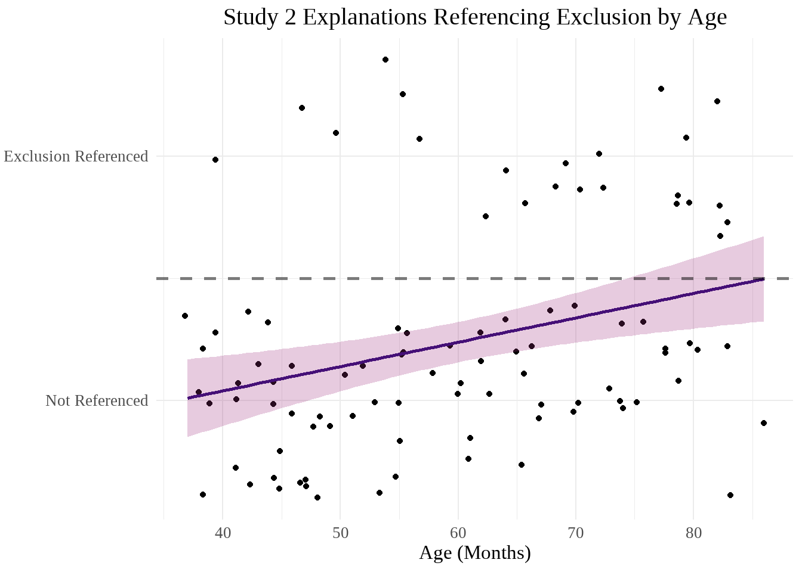
IN_presence_age_scatter <- seas2_separated |>
ggplot(aes(x = age_months, y = IN_present)) +
geom_jitter() +
stat_smooth(
method = "lm",
formula = y ~ x,
color = magma_colors[3],
fill = magma_colors[5],
alpha = 0.25) +
geom_hline(yintercept = 0.5, linetype = "dashed", linewidth = 1, alpha = 0.5) +
labs(
title = "Study 2 Explanations Referencing Inclusion by Age",
x = "Age (Months)",
y = NULL
) +
theme_minimal() +
theme(
plot.title = element_text(hjust = 0.5, size = 30),
text = element_text(family = "serif", size = 25)
) +
scale_y_continuous(
breaks = c(0,1),
labels = c("Not Referenced", "Inclusion Referenced")
)
IN_presence_age_scatterWarning: Removed 2 rows containing non-finite outside the scale range
(`stat_smooth()`).Warning: Removed 2 rows containing missing values or values outside the scale range
(`geom_point()`).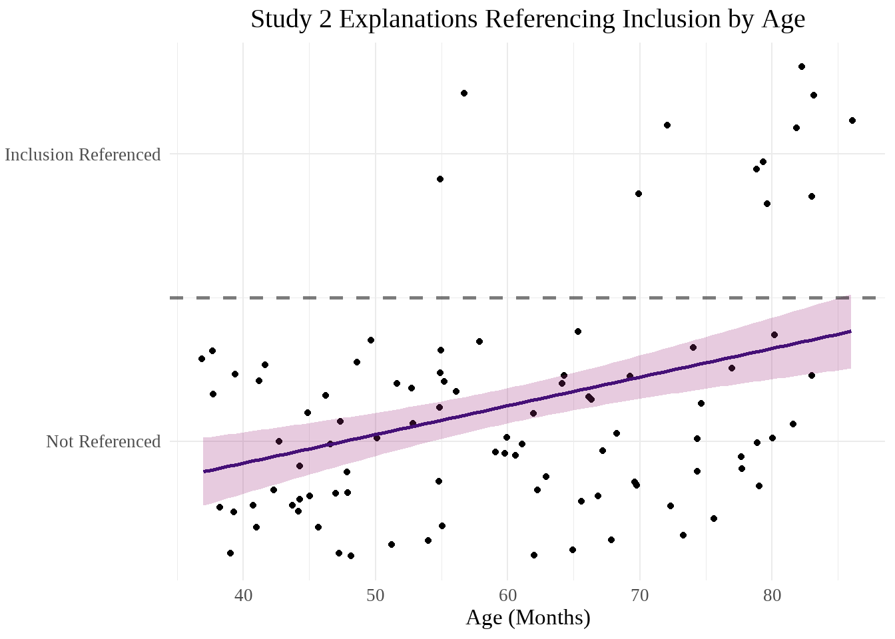
SG_presence_age_scatter <- seas2_separated |>
ggplot(aes(x = age_months, y = SG_present)) +
geom_jitter() +
stat_smooth(
method = "lm",
formula = y ~ x,
color = magma_colors[3],
fill = magma_colors[5],
alpha = 0.25) +
geom_hline(yintercept = 0.5, linetype = "dashed", linewidth = 1, alpha = 0.5) +
labs(
title = "Study 2 Explanations Referencing the Game Specifically by Age",
x = "Age (Months)",
y = NULL
) +
theme_minimal() +
theme(
plot.title = element_text(hjust = 0.5, size = 30),
text = element_text(family = "serif", size = 25)
) +
scale_y_continuous(
breaks = c(0,1),
labels = c("Not Referenced", "Specific Game Referenced")
)
SG_presence_age_scatterWarning: Removed 2 rows containing non-finite outside the scale range
(`stat_smooth()`).Warning: Removed 2 rows containing missing values or values outside the scale range
(`geom_point()`).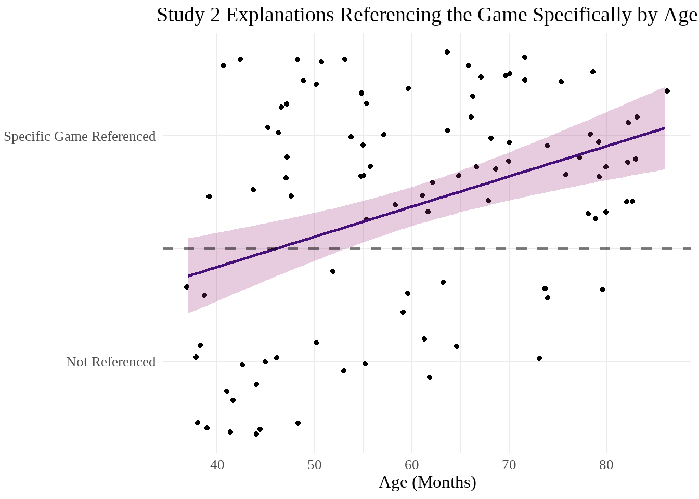
Word Count
Graphs
#Scatterplot of total word count by age
seas2 |>
rowwise() |>
mutate(
word_total = sum(c_across(contains("word"))) #could remove NAs from this step, but it's actually probably better to drop NAs from the scatter bc don't know how many words MS people would have
) |>
ungroup() |>
ggplot(aes(x = age_months, y = word_total)) +
geom_point() +
stat_smooth(
method = "lm",
formula = y ~ x,
color = magma_colors[3],
fill = magma_colors[5],
alpha = 0.25) +
labs(
title = "Study 2 Explanation Total Word Count by Age",
x = "Age (Months)",
y = "Word Count"
) +
theme_minimal() +
theme(
plot.title = element_text(hjust = 0.5, size = 30),
text = element_text(family = "serif", size = 25)
)Warning: Removed 11 rows containing non-finite outside the scale range
(`stat_smooth()`).Warning: Removed 11 rows containing missing values or values outside the scale range
(`geom_point()`).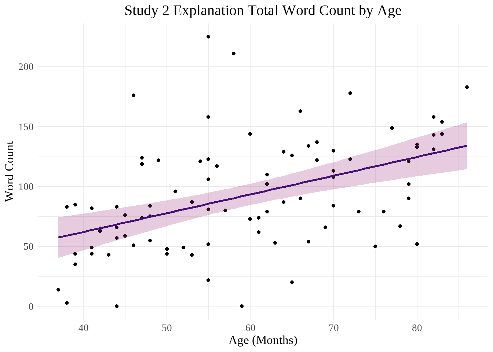
Analyses
seas2_wordtot <- seas2 |>
rowwise() |>
mutate(
word_total = sum(c_across(contains("word")))) |>
filter(!is.na(word_total))
summary(glm(
word_total ~ age_months,
data = seas2_wordtot
))
Call:
glm(formula = word_total ~ age_months, data = seas2_wordtot)
Coefficients:
Estimate Std. Error t value Pr(>|t|)
(Intercept) -0.3330 19.8368 -0.017 0.987
age_months 1.5645 0.3266 4.790 6.99e-06 ***
---
Signif. codes: 0 '***' 0.001 '**' 0.01 '*' 0.05 '.' 0.1 ' ' 1
(Dispersion parameter for gaussian family taken to be 1738.253)
Null deviance: 187634 on 86 degrees of freedom
Residual deviance: 147751 on 85 degrees of freedom
(1 observation deleted due to missingness)
AIC: 899.95
Number of Fisher Scoring iterations: 2The number of words used by participants significantly differs based on age.